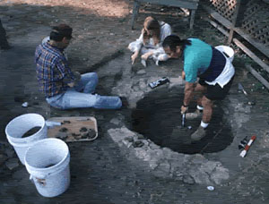

The Institute is working on the conversion of archaeological and geospatial data and its interpretation into media for instructional technologies development and dissemination. We are currently producing multimedia centered on the archaeology and history of the Old Mission of San Juan Bautista. In addition, we are currently creating large-scale electronic maps and interactive multimedia resources for lab and classroom use.
As of the Fall of 1998, the foregoing developments are intended to serve as the foundation for the Institute's specialty track in Integrated Archaeological Science, Technology, and Visualization, which is currently being developed by the CSUMB Institute for Archaeology in coordination and consultation with the archaeology and social science programs of Cabrillo and Hartnell colleges. Within three years, it is projected that this program will serve both students and community interests by way of education and training in the use and deployment of state-of-the-art technologies in information management, multimedia production, and geospatial applications in archaeology, history, and museum anthropology.

The projected development of a self-sufficient
contract or public archaeology program is anticipated within five years,
at which time, it is projected that the Institute will serve as a clearinghouse
and repository for archaeological and historical collections from throughout
the Central Coast and beyond. In addition to training students, it is anticipated
that the public archaeology component will serve a contracting function
for the purposes of state and federal requirements governing environmental
and cultural impact reporting. Ultimately, longer range projections include
the development of an interdisciplinary maritime archaeology and cultural
resources program with offerings and curriculum drawn from the social and
behavioral and natural sciences programs of CSUMB and beyond. It is anticipated
that this approach will serve to provide an integrated approach that encompasses
the arts and sciences of archaeology, history, cultural geography, GIS,
ethnography, marine sciences, and computing.